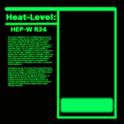

TheComet
Say I had a model of a computer and I wanted to texture the screen of the computer with one of these 6 frames:

What would be the best approach switch textures dynamically? Should the 6 frames be put into an atlass and the UV coordinates be changed, or should the 6 frames be separate textures (or something else)?